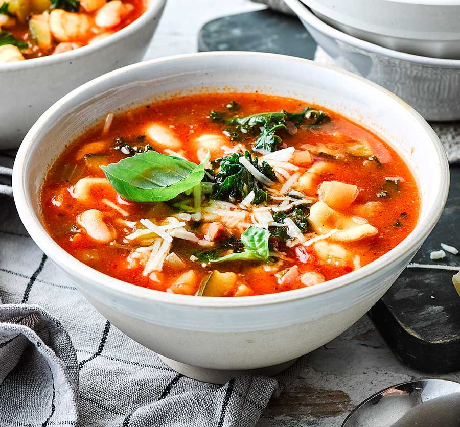

Minestrone

Description
Minestrone is a hearty, vegetable-packed Italian soup that’s versatile and brimming with flavors from seasonal produce, beans, and pasta or rice. It's the ultimate comfort food, perfect for cooler days or as a light main dish. Traditionally, minestrone varies by region and season, so feel free to adapt the vegetables based on what you have on hand!
Ingredients
- Vegetables:
- 2 tbsp olive oil
- 1 onion, diced
- 2 cloves garlic, minced
- 2 carrots, diced
- 2 celery stalks, diced
- 1 zucchini, diced
- 1 bell pepper, diced
- 1 small potato, peeled and diced
- 1 cup green beans, chopped into 1-inch pieces
- Soup Base:
- 1 can (400g) diced tomatoes
- 4 cups vegetable broth
- 1 can (400g) cannellini beans or red kidney beans, drained and rinsed
- 1/2 cup small pasta (like ditalini) or 1/2 cup rice
- 1 tsp dried basil
- 1 tsp dried oregano
- Salt and pepper to taste
- 1-2 cups fresh spinach or kale, chopped (optional)
- Freshly grated Parmesan cheese for serving
Steps
- Sauté the Vegetables:
- In a large pot, heat olive oil over medium heat. Add the onion and garlic and cook until softened, about 3 minutes.
- Add the carrots, celery, zucchini, bell pepper, and potato. Cook for another 5 minutes, stirring occasionally, until the vegetables begin to soften.
- Simmer the Soup:
- Add the diced tomatoes, vegetable broth, beans, basil, and oregano. Season with salt and pepper. Bring the soup to a boil, then reduce the heat and let it simmer for about 20 minutes, until the vegetables are tender.
- Add Pasta/Rice and Green Vegetables:
- Stir in the pasta or rice and continue to simmer for 10-12 minutes, until the pasta or rice is cooked to your liking.
- Add the chopped spinach or kale in the last few minutes of cooking, just until wilted.
- Serve:
-
Ladle the soup into bowls and top with freshly grated Parmesan cheese if desired. Enjoy with crusty bread or a light salad on the side for a complete meal.